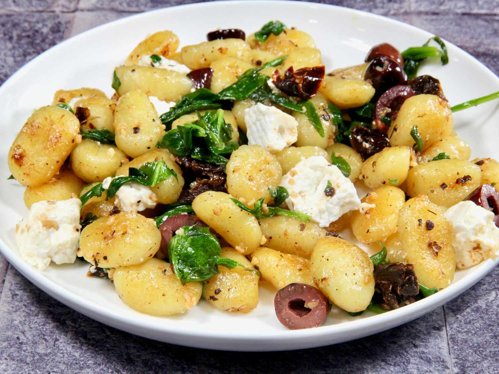

These skillet gnocchi with spinach and feta are comforting dish that's ready in less than 30 minutes . Golden on the outside and tender inside , the pen-fried gnocchi are tossed with spinach ,feta , sun-dried tomatoes and other flavor-packed ingredients for an easy Mediterranean-inspired meal
In a large pot of salted water to a boil . Add gnocchi and cook according to pachage directions , typpically 2 minutes
Remove with a slotted spoon to a paper towel to drain
Melt butter and sun-dried tomato oil in a skillet over medium heat.
Add gnocchi and fry for 3 and 5 minutes , turning regularly
Add wine or reserved pasta water ,sun-dried tomatoes , olives , garlic granules , salt and pepper and cook for 2 additional minutes
Stir in spinach and cook until it wilts , 1 to 2 minutes .Gently fold in feta cheese and serve.